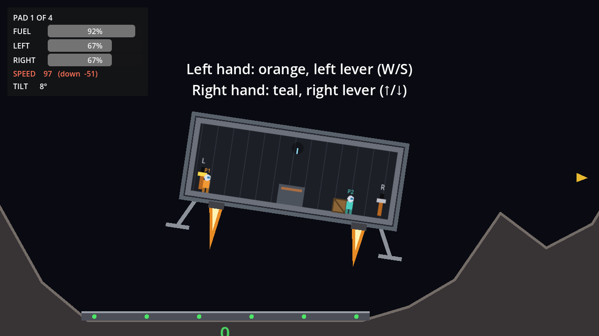

Godot learning
Small, finished Godot games for learning the engine, one genre at a time. Each game comes with a spec (what it is and how it's built) and a guide (what to do and learn, step by step, with checkboxes that remember your progress in this browser).
Code: github.com/TheCosmicKitchen/Godot-Learning
Start here
| Roadmap | The ten games, and how the work is split between you and Claude |
| Syllabus | Ten units of Godot: goals, reading, exercises |
Lessons
| # | Game | Spec | Guide | Status |
|---|---|---|---|---|
| 1 | Touchdown: land a ship by steering both crew at once | Spec | Guide | Set up, your turn |
| 2 | Pressure: grid puzzle | Planned | ||
| 3 | Hold the Line: arena survival | Planned | ||
| 4 | Crumble: local party game | Planned | ||
| 5 | Deep Hand: card game | Planned | ||
| 6 | Two Keys: online co-op puzzle | Planned | ||
| 7 | Dig Beat: rhythm game | Planned | ||
| 8 | Little Camp: colony sim | Planned | ||
| 9 | Diorama Drive: a 3D detour | Planned | ||
| 10 | Sand Jar: falling-sand toy | Planned |

How each game works
- Setup (Claude): the project, scenes, input, placeholder art and game loop, with the core methods left empty and marked
// YOU:. - Core (you): follow the guide and write those methods by hand. Ask Claude for hints and explanations, not answers.
- Review (Claude, with you): a code review and an idiomatic Godot review of what you wrote. You make the fixes.
- Polish (together): feel, sound and the extras that make it fun. Then a short note on what you learned.